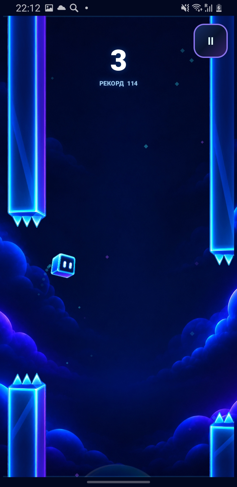
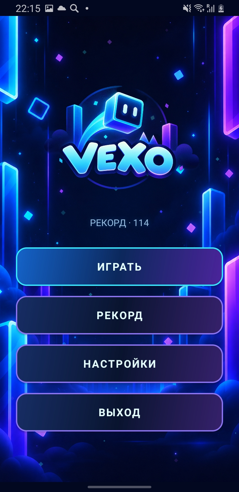
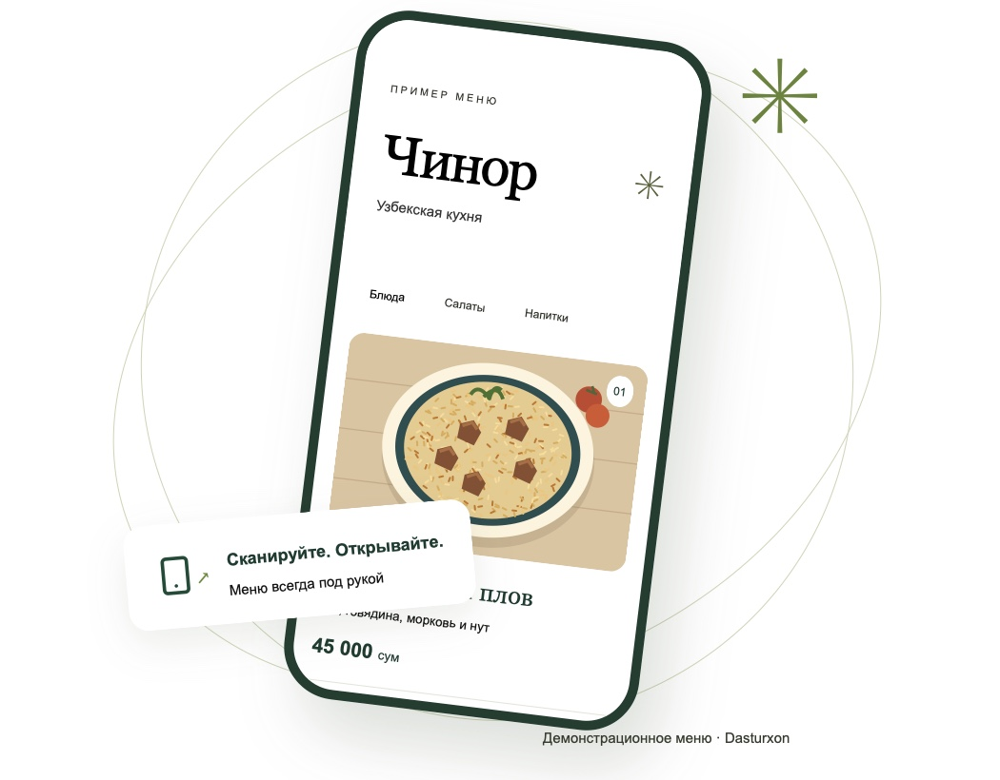
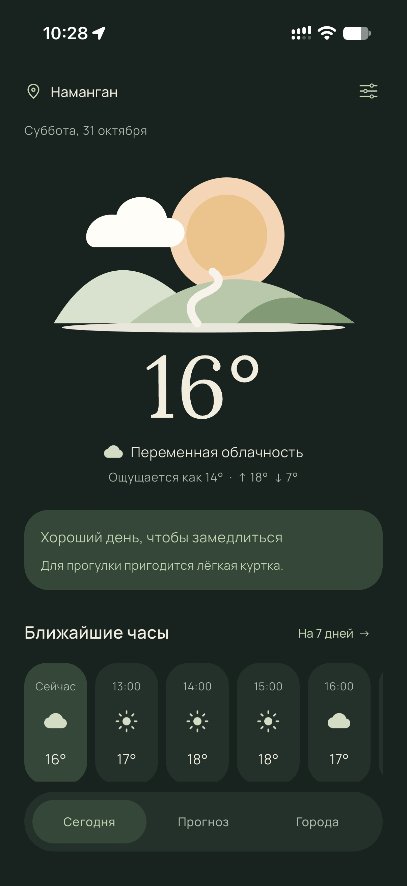
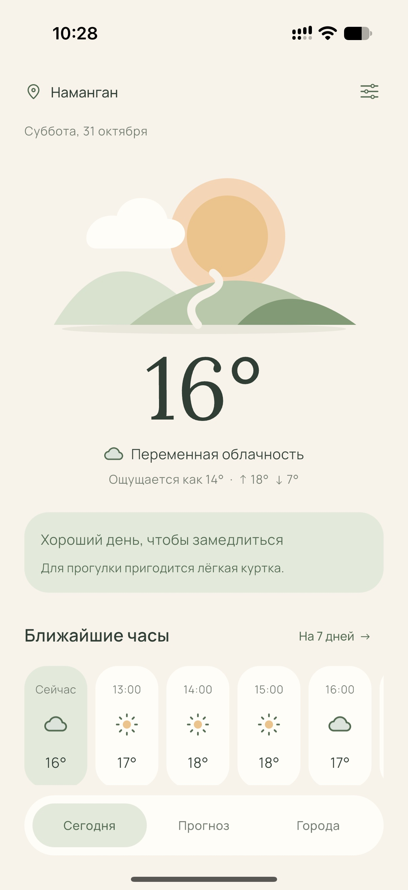

ПОЙМАЙ СВОЙ РИТМ
VEXO✳
Неоновый мир, яркий персонаж и движение. Мобильная игра с собственным визуальным характером.
МЕНЮ / ИГРОВОЙ ЭКРАН / ВИЗУАЛЬНЫЙ СТИЛЬ


01.1 / MOBILE EXPERIENCE
ЛИЧНЫЙ ПРОЕКТVEXO / 01
Личные проекты в мобильной разработке, вебе и ИИ. От первых идей до работающего интерфейса.
Смотреть проектыНеоновый мир, яркий персонаж и движение. Мобильная игра с собственным визуальным характером.


Онлайн-меню для ресторанов Узбекистана. Блюда, фотографии и цены — по одному QR-коду, прямо в телефоне гостя.
Открыть сайт
DASTURXONNET.NETLIFY.APP ↗Концепция цифрового рабочего пространства. Офис как интерфейс: рабочие зоны, комната отдыха и внимание к деталям.
Открыть демоПогода в спокойном ритме. Прогноз на ближайшие часы и неделю, любимые города и мягкие светлая и тёмная темы — в приложении для iOS.


ОПЫТ В ЦИФРАХ
С малых лет интересуюсь информационными технологиями. Сегодня работаю в ИТ-компании и развиваю собственные проекты.
Работал над более чем 50 Android-приложениями, создал 3 Telegram-бота и 2 сайта. Мне нравится превращать идеи в работающие продукты — от логики и интерфейса до проверки на реальном устройстве.
Мне интересно, как устроены технологии, общество и экономика: как решения прошлого влияют на настоящее и какие возможности открывают новые инструменты.